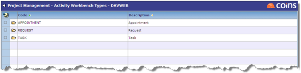

To set up Activity Workbench types:
- Go to Activity Workbench Types.

To configure the synchron
- Go to Configuration.
- Click the Activity Workbench tab.
- For the given Project Management Item types, specify the corresponding Activity Workbench Type that should be created. If the Activity Type field is left blank, no synchron

- In Closed Status, select the status the item should be set to when an item is closed in the Activity Workbench (or closed in Outlook if the Activity Workbench is being synchron
- On this tab also select the journal type to use for emails imported from Microsoft Exchange.